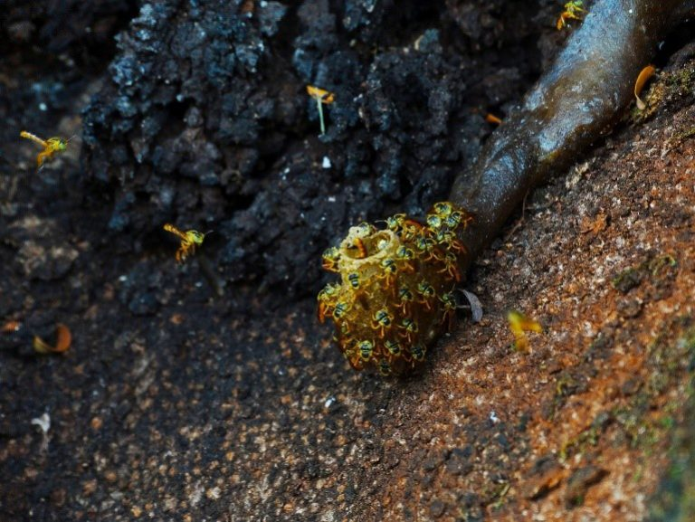
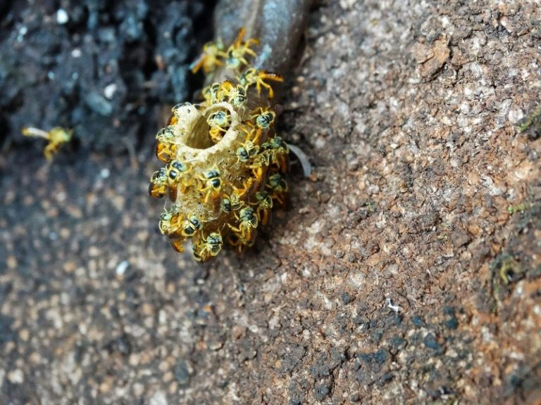
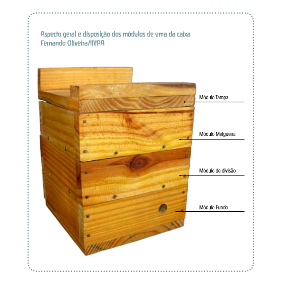
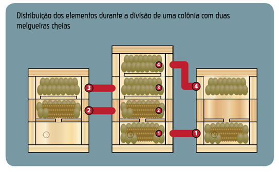
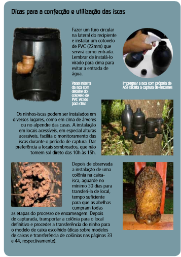

Publicado em 12 de junho de 2018 por Laura Barbosa Ferreira e Leonardo Mazzero
A criação de abelhas é uma prática conhecida em todos o território nacional. Esta criação se divide em duas, a apicultura, a cultura com a abelha africanizada Apis mellifera e a meliponicultura, que usa abelhas nativas brasileiras sem ferrão, estas são chamadas de abelhas indígenas.

Ninho de Jataí no Campus Fernando Costa, Pirassununga – SP
Foto: Cristian Ferreira
O conhecimento sobre as abelhas sem ferrão e a meliponicultura nas Américas é muito antigo quando comparado com as atividades envolvendo, nesse continente, as abelhas Apis mellifera (popularmente conhecidas como européias, italianas ou africanas). Há muito tempo, povos indígenas de diversos territórios se relacionam com os meliponíneos de muitas formas, seja estudando-os, criando-os de forma rústica ou explorando-os de forma predatória. (Villas-Bôas, 2012) A criação de melíponas vem crescendo, as abelhas mais comuns para produção de mel são: mandaçaia (Melipona mandacaia), abelha branca (Frieseomelitta doederleini), uruçu (Melipona scutellaris), jataí (Tetragonisca angustula) e mosquito (Plebeia sp.). A maioria dessas abelhas usa ocos de árvores para alojar seus ninhos, mas algumas nidificam em cupinzeiros e em cavidades de muros. A principal espécie utilizada para a produção de mel no nordeste é a mandaçaia (Melipona mandacaia) e na região sudeste a jataí (Tetragonisca angustula). Como são abelhas sem ferrão o manejo é mais fácil, além de serem naturalmente mais calmas que a africana. A criação de melíponas ajuda na preservação das espécies pois são encontradas em todo o território, o valor dos produtos tem valor agregado maior. O mel é composto basicamente de açúcares proveniente do néctar e exuldato das plantas feito pelas abelhas de diversas espécies, e desde antes da colonização das Américas era utilizado pelos indígenas como principal fonte de açúcares em suas dietas. Os conhecimentos sobre a produção de abelhas sem ferrão foi se desenvolvendo com o tempo e sendo assimilada por diferentes culturas sendo difundida principalmente nas regiões norte e nordeste do país. Hoje o mel é o principal produto da produção de abelhas meliponas, sendo que também pode ser produzido a própolis e a cera.

Meliponas Construindo Canudo de Cera
Foto: Cristian Ferreira.
8 passos para construção de um meliponário:
1- Escolha de um local adequado: O local deve ser próximo a instalações humanas em atividade devido ao alto valor dos produtos e facilidade de furto dos mesmos. A entrada de estar protegida do vento e preferencialmente voltada para o leste. 2- Fixação da colmeia: colmeia pode ser pendurada embaixo de terraços de casas e outras construções, pendurados com arame ou apoiados sobre suportes nas paredes, também podem ser colocados sobre suportes no chão com cerca de 1,3 m de altura, cobrindo a colmeia com um telhado. 3- Construção ou aquisição das colmeias: As colmeias podem ser feitas de vários modos e de vários materiais, mas o indicado é utilizar caixas de madeira sem o uso de tintas e colas e seus tamanhos variam de acordo com a espécie utilizada, sendo que uma boa regra a ser utilizada é construir a caixa com 2 a 3 cm de largura a mais que o diâmetro do favo de cria. A caixa deve contar com quatro partes que podem ser destacadas facilmente, sendo elas respectivamente de baixo para cima o módulo de fundo, local onde ficarão os favos de cria e que deve conter a entrada da colmeia, o módulo de divisão, também contendo o favo de cria e um estrangulamento na forma de um losango para a separação e divisão das colmeias, dois módulos de melgueira com fundo semifechado, em que serão depositados os potes de mel, seguidos por uma tampa superior coberta por um telhado, esse modelo é conhecido como Fernando Oliveira/INPA como mostra a figura a seguir:

Fonte: Villas-Bôas, 2012
4- Escolha das espécies: As abelhas sem ferrão dependem do ambiente para se desenvolver, já que se alimentam do néctar de flores específicas de acordo com sua espécie, por isso a melhor espécie a ser produzida é aquela que se encontra naturalmente na região. 5- Aquisição de enxames: Para adquirir as abelhas pode-se utilizar de 3 métodos diferentes, sendo eles a separação de colmeias através da divisão dos favos de crias, transferindo os que estão mais velhos (prontos para eclodir) para uma nova caixa juntamente com parte dos potes de mel, a nova caixa deve ser colocada no local da antiga para que as campeiras que retornarem adentrem a nova caixa e a velha deve ser afastada no mínimo dez metros. Esse processo pode ser feito sem precisar ter contato com os favos utilizando a caixa INPA e suas separações, sendo que se retira o módulo de divisão juntamente com uma melgueira para a confecção de uma nova caixa, assim como na figura abaixo:

Fonte: Villas-Bôas, 2012
Outro método seria retirar todos os favos do local onde estas abelhas estão e transferir para uma caixa esperando alguns dias para que as demais abelhas povoem a nova morada. Também pode ser feita a captura das novas abelhas rainhas virgens que enchameiam utilizando uma solução atrativa a base de própolis utilizando uma garrafa pet com uma abertura feita através de um cotovelo de cano e fechada para impedir a passagem de luz de forma a atrair e capturar abelhas que estejam procurando um novo ninho e posteriormente transferi-las para uma caixa.

6- Extração do mel: a extração pode ser feita sem material de proteção por conta da ausência dos ferrões destas abelhas, podendo ser utilizadas seringas, bombas de sucção elétricas ou manuais. Também pode ser feita abertura de todos os potes de mel e realizar o escorrimento sobre um pano ou peneira para separação de impurezas. Para uma boa produção é importante não destruir os potes de mel, assim as abelhas apenas irão enche-los novamente e não ter que reconstruí-los.
7- Pasto apícola: É aconselhável descobrir as plantas preferidas para a alimentação de cada espécie e plantá-las próximo ao meliponário para melhores resultados produtivos. 8 – Conservação do mel: O mel deve ser envasado e é aconselhável realizar sua pasteurização através de um banho-maria a 65°C e posterior resfriamento. A criação de abelhas sem ferrão é uma boa alternativa para quem busca uma renda extra para sua propriedade, ou até mesmo uma alternativa de investimento como negócio próprio, de fácil manejo e com grande valor agregado ao produto.
Vídeo experiências de sucesso orientadas pelo Sebrae na criação das abelhas nativas:
https://www.youtube.com/watch?v=LMwfS3wUqg8